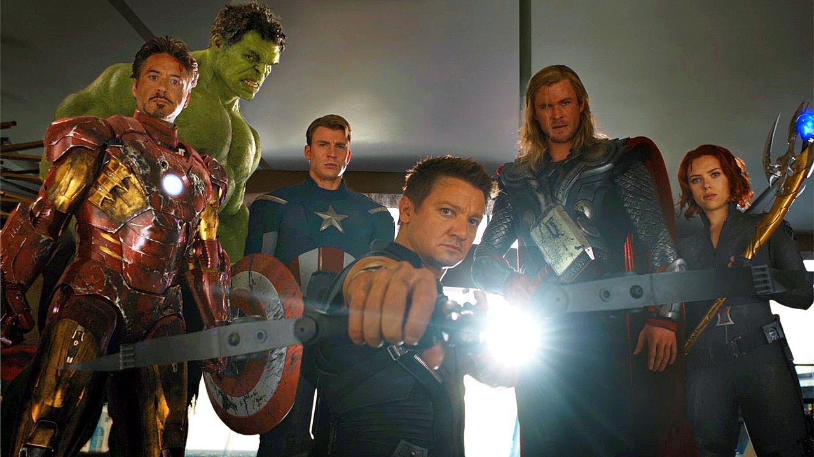

Un rencuentro esperado Los héroes han llegado!
Los héroes han llegado para poder controlar los villanos que intentan destruir el universo, se reúnen los primeros 5 héroes de la cronología de Marvel Studios.
Etiquetados como los Héroes más poderosos de la Tierra, los Vengadores originalmente consistían en Ant-Man, Hulk, Iron Man, Thor y Avispa. Ant-Man se convirtió en Giant-Man por el número 2. El Capitán América original fue descubierto atrapado en hielo en el número 4, y se unió al grupo después de que lo revivieran. Una lista rotativa se convirtió en un sello distintivo de la serie, aunque un tema se mantuvo constante: los Vengadores luchan "contra los enemigos que ningún superhéroe puede soportar".5 El equipo, famoso por su grito de batalla de «¡Vengadores unidos!», ha presentado a humanos, mutantes, inhumanos, androides, alienígenas, seres sobrenaturales e incluso antiguos villanos.Etiquetados como los Héroes más poderosos de la Tierra, los Vengadores originalmente consistían en Ant-Man, Hulk, Iron Man, Thor y Avispa. Ant-Man se convirtió en Giant-Man por el número 2. El Capitán América original fue descubierto atrapado en hielo en el número 4, y se unió al grupo después de que lo revivieran. Una lista rotativa se convirtió en un sello distintivo de la serie, aunque un tema se mantuvo constante: los Vengadores luchan "contra los enemigos que ningún superhéroe puede soportar".5 El equipo, famoso por su grito de batalla de «¡Vengadores unidos!», ha presentado a humanos, mutantes, inhumanos, androides, alienígenas, seres sobrenaturales e incluso antiguos villanos. 